关于使用插件刷学习通网课的教程
#本文的目的是让大家学会使用插件刷学习通网课（刷课有风险，使用须谨慎）一.你需要准备的工具: 计算机，一颗勇敢的心；
二.课前备注
“本文所写的方法，仅限于此时（2020/12/21），虽然作者的学习通和智慧树网课都是使用插件刷的，也没有被检测。但是，本人室友就因使用学习通16倍速刷课被检测了 ：（。此类插件并不是唯一的，需要大家去谨慎挑选使用，大家挑选插件时，应注意插件的更新时间和反馈，尽量不要做小白鼠。插件有风险，使用须谨慎”
本次我们使用的浏览器使Microsoft的新版Edge浏览器做演示；除此浏览器外，chrome浏览器、火狐浏览器也可以，但具体操作有所差别，为保证教学顺利进行，本文只演示在Edge浏览器的操作过程，请大家使用新版Edge浏览器。另外，由于chrome浏览器的特殊性，后面我们使用的油猴插件（tampermonkey）不易在此浏览器安装，故不推荐。
若您没有edge浏览器,请打开以下链接去下载安装(具体安装步骤不再演示):
https://www.microsoft.com/zh-cn/edge
新版edge浏览器：
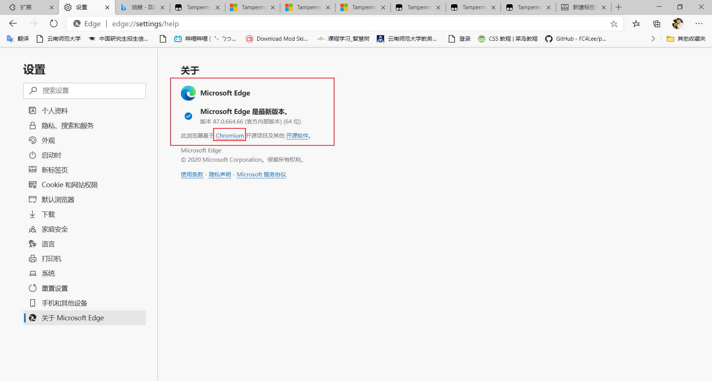
火狐浏览器（firefox）：
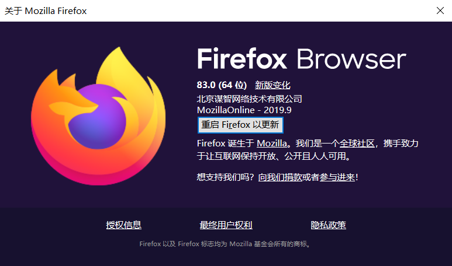二.教程正文：
1.安装油猴插件
打开edge浏览器，在地址框输入以下链接：
图示如下（请注意我的绿框，你应该和我一样，如不是，请点击Microsoft Edge）：
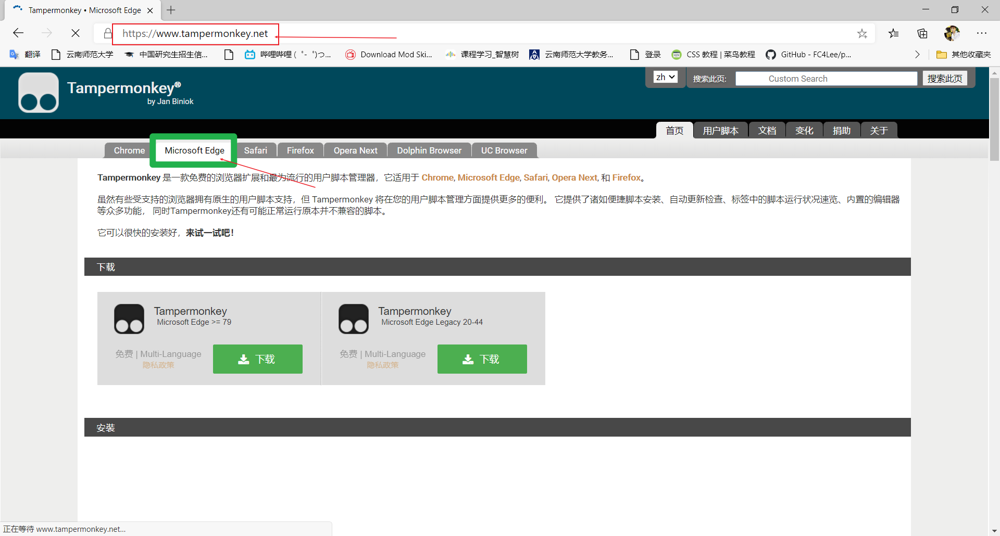
单击左边的下载，如图：
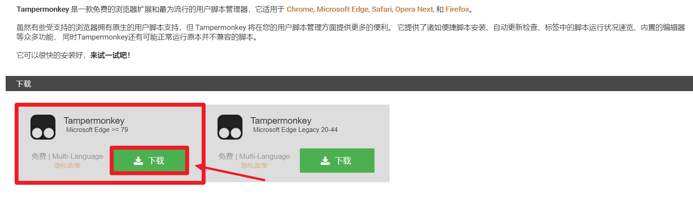
当浏览器跳转到新的页面后，看右上角，是不是有一个蓝色 获取 按钮，点击它：
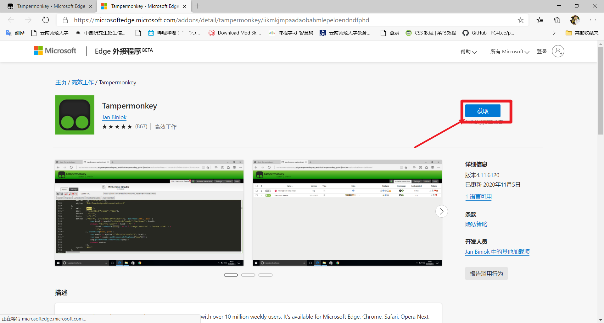
浏览器正上方会弹出提示框，单击添加扩展：
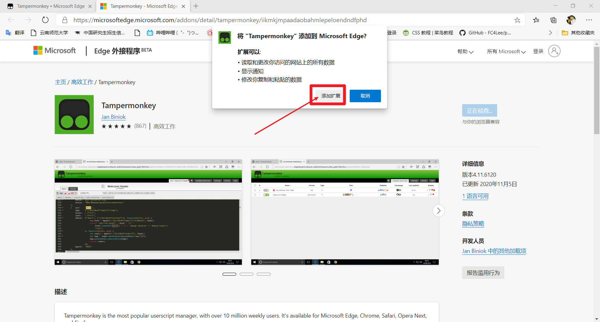
静等几秒，待其弹出图示提示框，代表油猴插件已安装好：
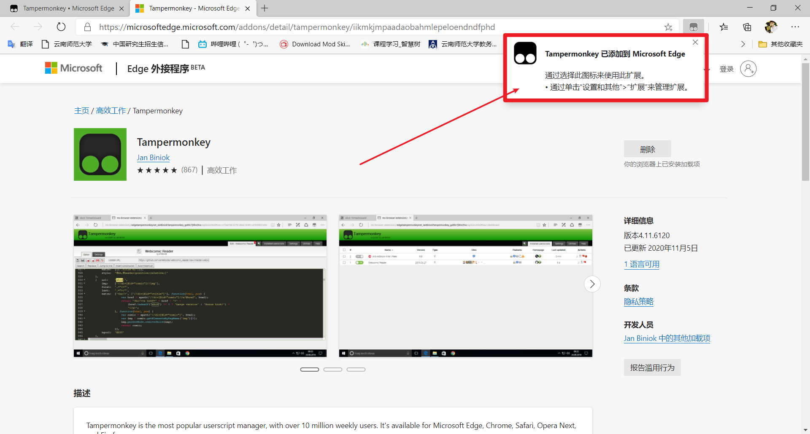
2.安装学习通刷课脚本
在浏览器地址栏输入以下网址，由于此网址打开速度较慢，大家请耐心等待：
https://greasyfork.org/zh-CN/scripts
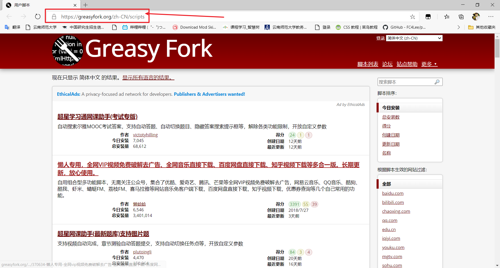
（打开网址后，恭喜大家发现了新大陆，油猴脚本不仅可以刷课，还可以自动做一些作业，考一些试，看一些盗版电影，去一些广告，刷U校园等。。
不过本次教程只打算演示刷课这一功能，就当抛砖引玉吧。）
我们在页面右上角搜索 学习通 ，在结果里找到符合我们需要的插件，点击它：
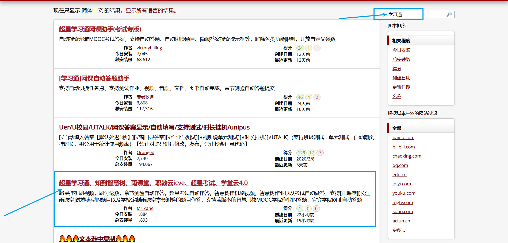
点击安装此脚本：
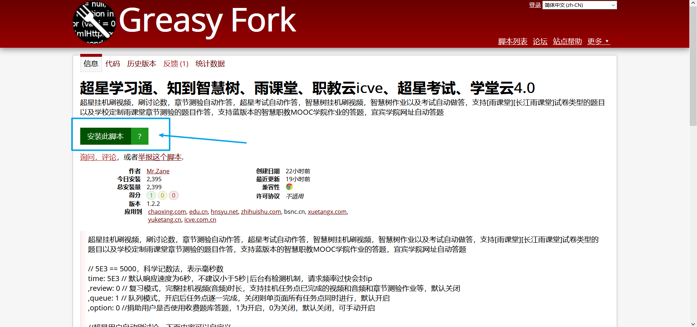
在跳到新的界面后，点击安装：
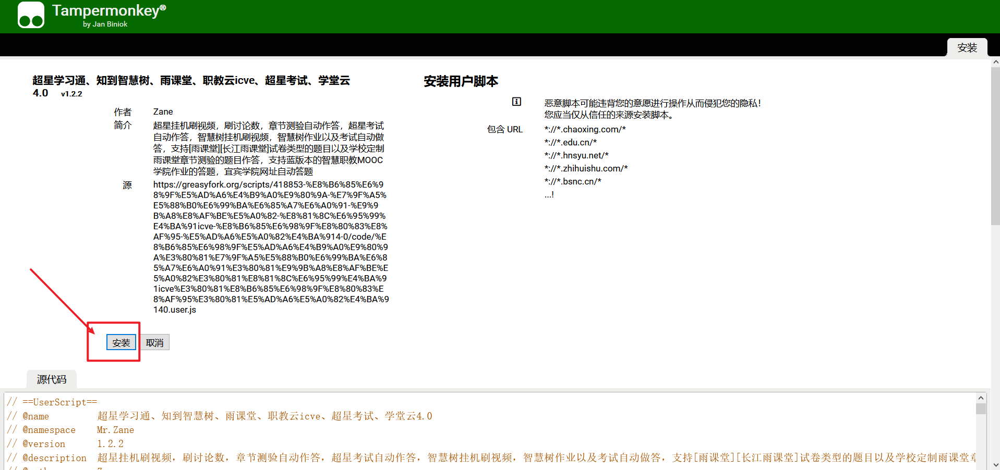
此时页面会跳到图示界面：
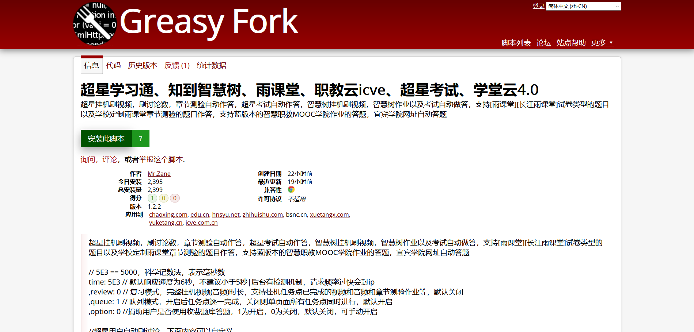
好的，我们点击浏览器右上角那个奇怪的小图标，点击管理面板：
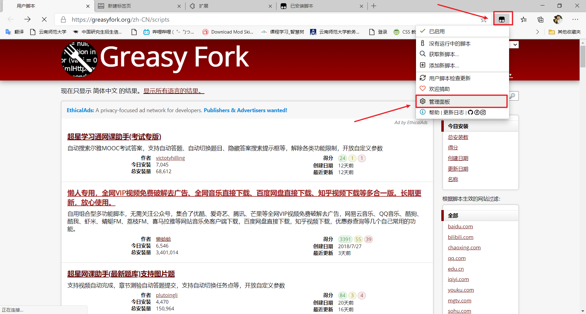
看到你安装的插件了吗，如果可以，证明你已经成功了：
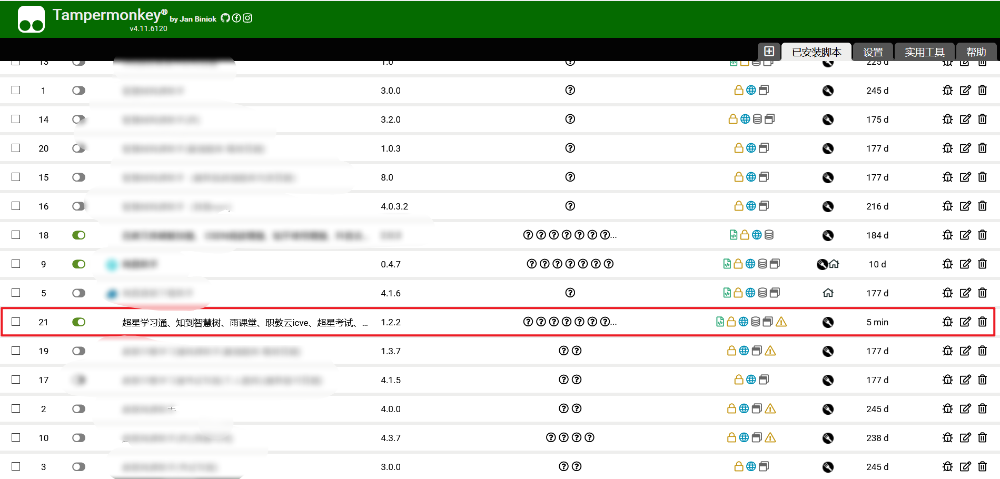
剩下的事就是打开学习通，按照提示操作，让它代你刷课吧~
三.补充一下
1.使用本方法有风险，且不保证插件会不会翻车。
2.插件并非本文作者开发，希望大家还是认真学习网课!
3.插件有风险，使用须谨慎！！！